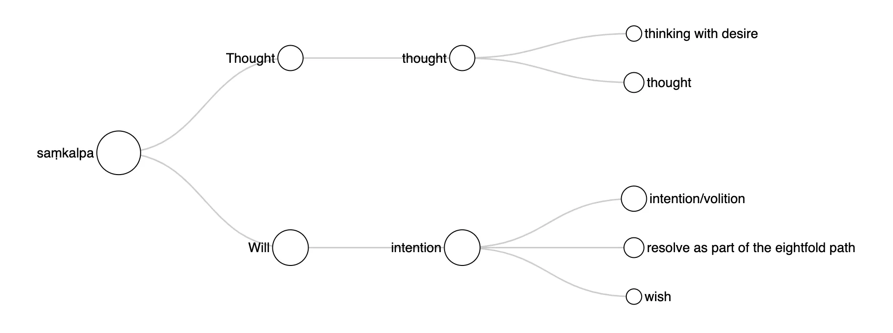
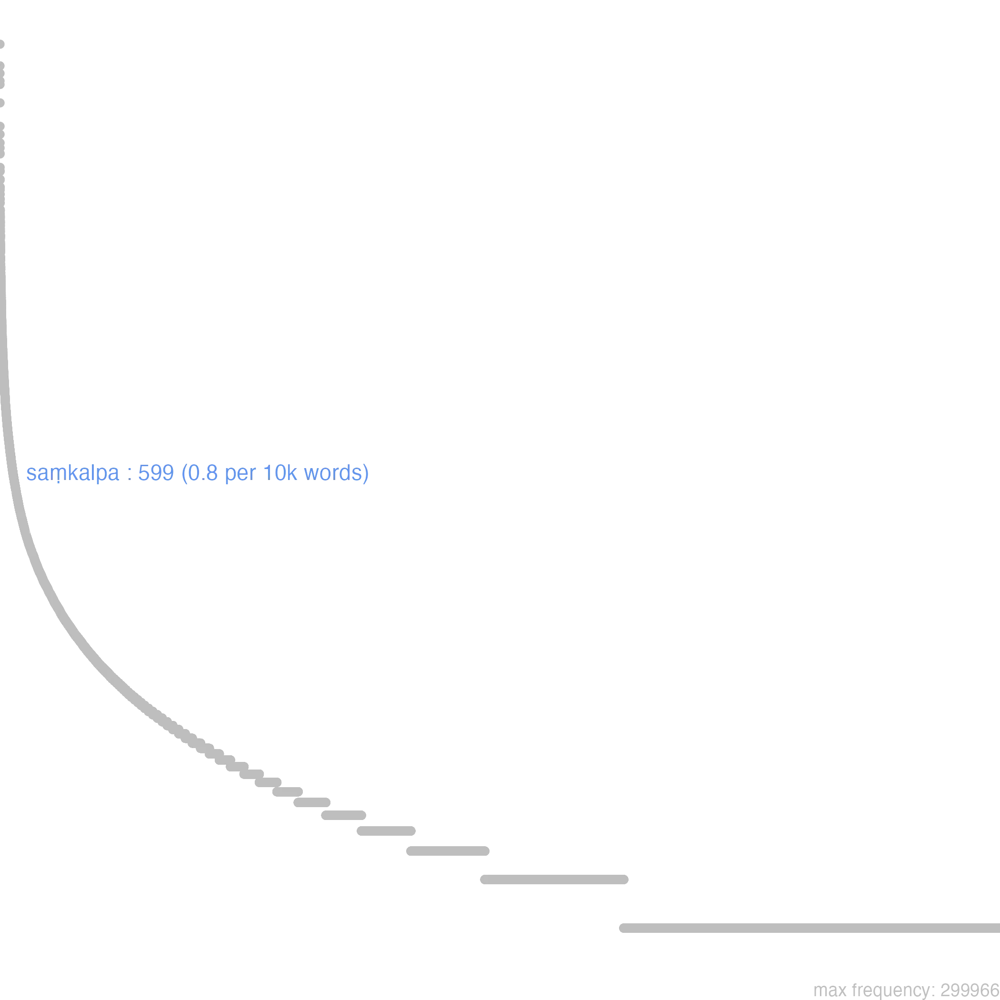
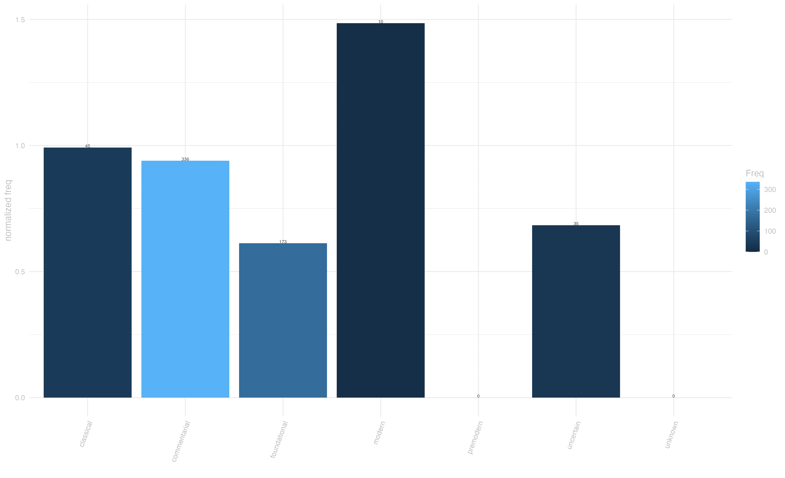
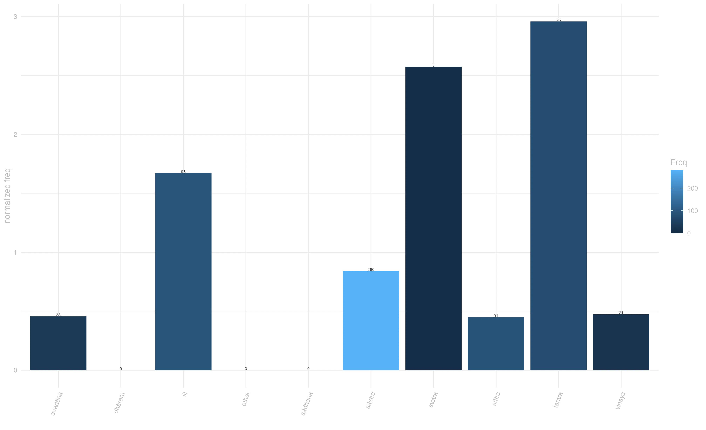
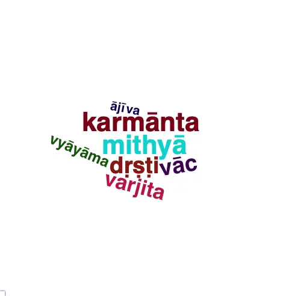

9 saṃkalpa
samyak-saṃkalpaḥ katamaḥ ? buddhatv^ādi-pariṇāmitaṃ dānam śīlaṃ ca cakravarty-ādi-pariṇāmitam / ayaṃ bhikṣavaḥ samyak-saṃkalpaḥ / arthaviniścayasūtra 315
“What is right thought? It is doing virtuous and generous deeds [with the aim that they] ripen into attaining Buddhahood rather than leading to universal sovereignty. This is right thought.” [Samtani 161]
9.0.1 overview
Saṃkalpa pertains to the domain of Thought, where it ranges from expressing the general notion of thought to denoting the specific aspect of mental activity associated with volition. Its semantic spectrum may be conceived as laying at the intersection between the fields of mental capacity and will, and as having at its extremes the purely cognitive semantic category of thought at one end, and the quasi-emotional categories of wish and desire at the other.
In our corpus, saṃkalpa expresses four closely related concepts: thought, mainly in the sense of conceptual constructions;1 thinking with desire, the form of thought that guides action;2 intention/volition, the aspect of volition that is linked to desire, in particular in relation to the pleasures of the senses;3 and a generic form of wish, as in the idiomatic expressions “at wish” (saṃkalpamātreṇa) and “may your wish come true” (ṛdhyantu tava saṅkalpāḥ).4
Building on the first two senses, the specialized Buddhist use of saṃkalpa as resolve as part of the eightfold path developed. Since saṃkalpa often conveys both the sense of thought and that of intention simultaneously, it is in most cases impossible to pin down the precise semantic value of the specialized Buddhist use of saṃkalpa. The rare instances in which its meaning is spelled out highlight that samyaksaṃkalpa could be interpreted both as ‘right intention’ and ‘right thought’.5 As right intention (samyak-saṃkalpa), it constitutes the second factor of the eightfold path, where it constitutes the mental resolve toward liberation.
dvitīye ’nyatra saṃkalpāt dvitīye dhyāne samyak-saṃkalpa-varjyāḥ ṣaṭ-triṃśad eva / [abhidharmakośabhāṣya 386] “In the Second, with the exception of thoughts. In the Second Dhyāna, thoughts (a part of the Eightfold Path) are absent, but the other thirty-six adjutants of Bodhi remain. Thought is absent since vicāra is also absent.” [Pruden 1030]

9.0.2 frequency & register
Saṃkalpa is a mid-frequency word in our corpus. It is fairly evenly dispersed across period and genres, but shows a noticeable presence in literary texts. This indicates that besides the strictly doctrinal, terminological, application of this word as a node in the taxonomy of Buddhist practice as part of the eightfold path, saṃkalpa is closer to the general-language register, or perhaps imbued of poetic tones:
saṃkalpa-viṣa-digdhā hi pañc^endriyamayāḥ śarāḥ / cintā-puṅkhā rai-phalā viṣay^ākāśa-gocarāḥ // 13 — 35 // saundarananda 13.35 “For the arrows of the five senses are tipped with the poison of fancies, have anxieties for their feathers and pleasure for their target and fly in the air of the objects of the senses.” [Johnston 75]



9.0.3 context
The most notable compound involving saṃkalpa is samyak-saṃkalpa, the right intention listed as a node in the eightfold path. This use of saṃkalpa is also responsible for the statistically significan collocation with dṛṣṭi, another node on the same taxonomy. It also accound for the rarer, and polar opposite, collocation mithya-saṃkalpa: kiṃ tarhi bhagavat oktaṃ tato ’pi mithyā-dṛṣṭer mithyā-saṃkalpaḥ prabhavati mithyā vāg mithyā karmāntam ity evam ādi / [abhidharmakośabhāṣya, 203] “Yet the Blessed One said, ‘From bad views there proceeds bad resolution, bad speech, bad action, bad livelihood.’ Now bad views are abandoned through Seeing.” [Pruden, 575]

9.0.4 connotation
Saṃkalpa presents a predominantly neutralsemantic prosody, specially in philosophical contexts. A positive conotation emerges when it is associated with spiritual progress and sight intention,6 whereas a negative one accompanies phrases like “thinking with desire” (saṃkalpa-rāga).7
This entry is based on version 6 of of the Visual Dictionary of Buddhist Sanskrit, see data at zenodo.org/records/13985112
a-svabhāvāni subhūte tāni cittāni a-sat-saṃkalpāni / aṣṭasāhasrikā 128
“For he [the Tathagata] knows that those thoughts are without own-being, that they are just a false representation of what is not.” [Conze 174]↩︎saṃkalpa-prabhavo rāgo dveṣo mohaś ca kathyate / śubh^ā-śubha-viparyāsān saṃbhavanti pratītya hi // 23 — 1 // mūlamadhyamakakārikā 22.16
“It is said that desire, hatred, stupidity arise from conceptuality; they arise in dependence on the pleasant, the unpleasant and confusion.” [Batchelor]↩︎ko ’tra bhagavan anyo ’dhimokṣyate ’vinivartanīyo bodhisattvo mahāsattvo ’rhan vā paripūrṇa-saṃkalpo dṛṣṭi-saṃpanno vā pudgalaḥ / aṣṭasāhasrikā 135
“The enlightenment of the Buddhas, the Lords, is brought about and revealed through it. Who else could firmly believe in it, except an irreversible Bodhisattva, or an Arhat whose intentions are fulfilled, or a person who has achieved right views?” [Conze 177]↩︎yat kiñcid abhikāṅkṣāmi vastra-ratn^ādi-sampadāṃ / tac ca saṃṅkalpa-mātreṇa mama sarvaṃ samṛdhyati / 47 / suvarṇavarṇāvadāna 185 . 2 — 196 . 3
“Whatever abundance of garments and jewels I desire, all that, too, gets accomplished for me by the mere thought thereof.” [Rajapatirana 71.47]↩︎samyak-saṃkalpaḥ katamaḥ ? buddhatv^ādi-pariṇāmitaṃ dānam śīlaṃ ca cakravarty-ādi-pariṇāmitam / ayaṃ bhikṣavaḥ samyak-saṃkalpaḥ / arthaviniścayasūtra 315
“What is right thought? It is doing virtuous and generous deeds [with the aim that they] ripen into attaining Buddhahood rather than leading to universal sovereignty. This is right thought.” [Samtani 161]↩︎mahā-bhiṣaṭko ’si anuttaro ’si ananta-kalpaiḥ samudāgato ’si / uttāraṇ^ārthāy iha sarva-dehināṃ paripūrṇa saṃkalpu ayaṃ ti bhadrakaḥ // saddharmapuṇḍarīka 106
“Thou art the great physician, having no superior, rendered perfect in endless Aeons. Thy benign wish of saving all mortals (from darkness) has to-day been fulfilled.” [Kern 158]↩︎saṃkalpa-prabhavo rāgo dveṣo mohaś ca kathyate / śubh^ā-śubha-viparyāsān saṃbhavanti pratītya hi // 23 — 1 // mūlamadhyamakakārikā 22.16
“It is said that desire, hatred, stupidity arise from conceptuality; they arise in dependence on the pleasant, the unpleasant and confusion.” [Batchelor]↩︎